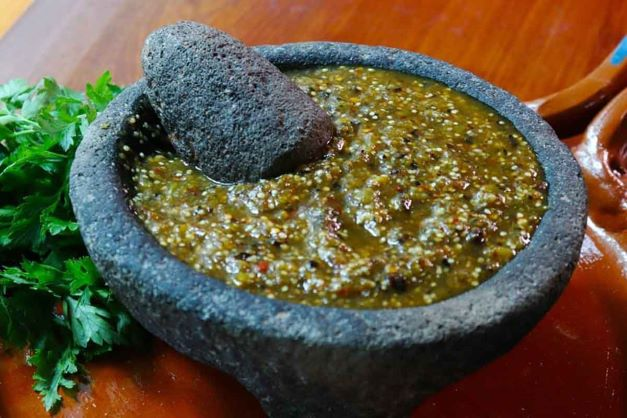

Salsa Verde
Hecha de tomatillo, chile verde, ajo y cilantro.
Hecha de tomatillo, chile verde, ajo y cilantro.
A base de jitomate, chiles secos y especias.
Salsa hecha en piedra volcánica, con chiles frescos o secos.
Mezcla fresca de tomate, cebolla, chile y cilantro.